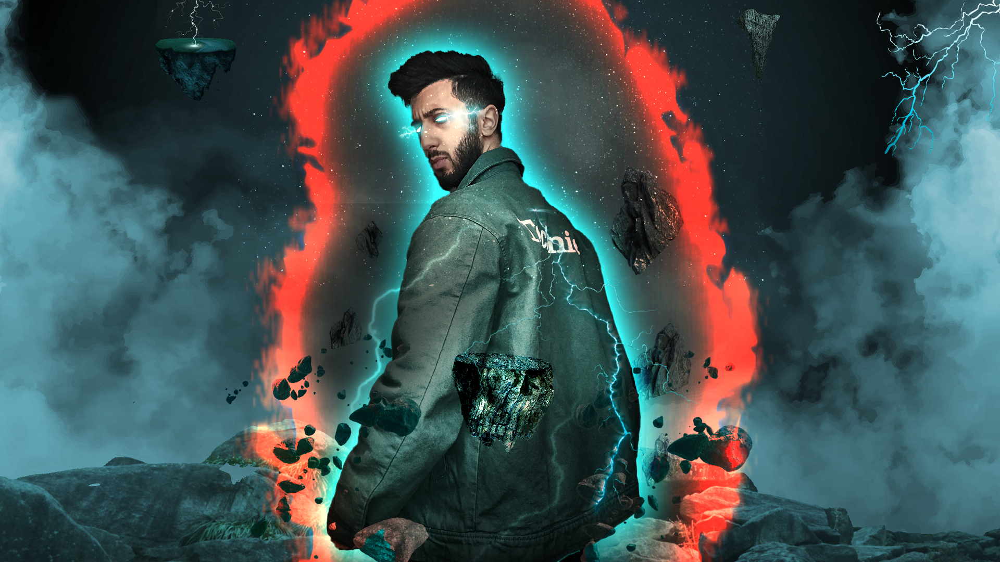
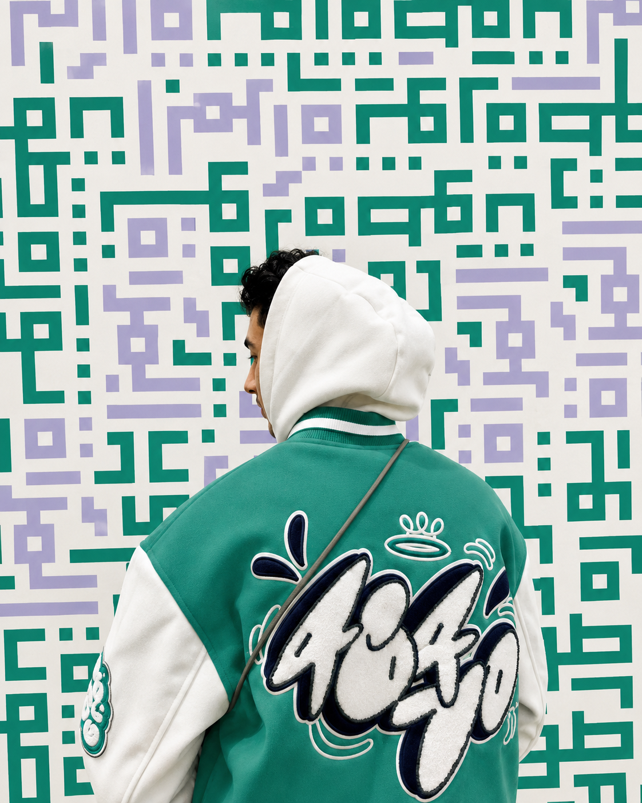
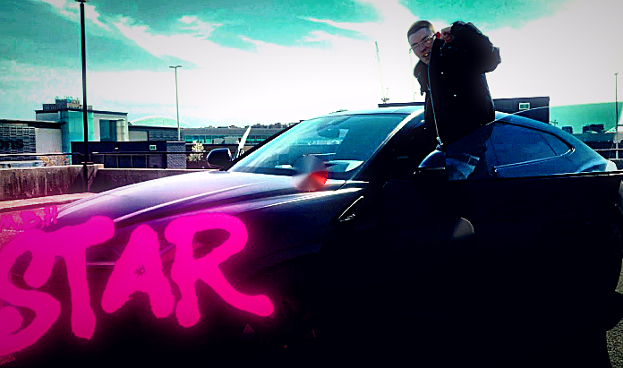
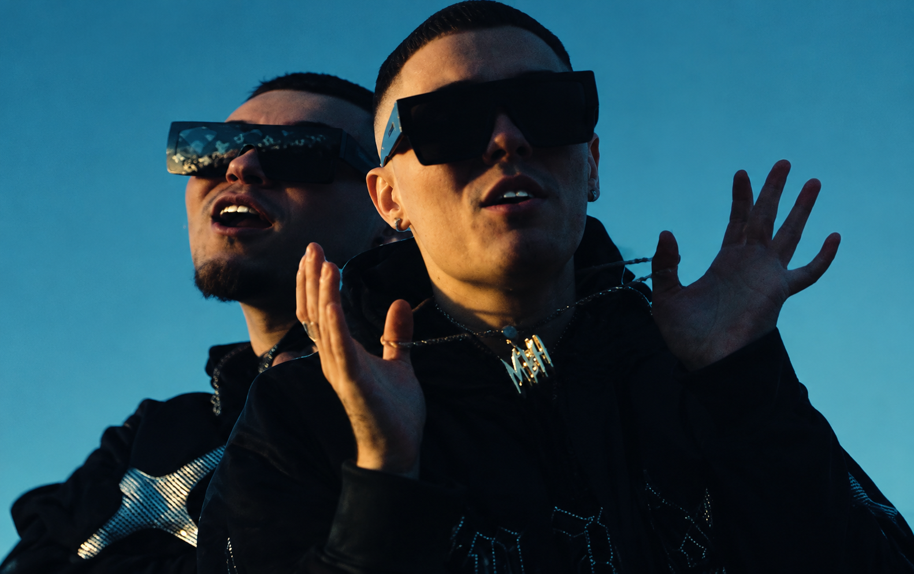
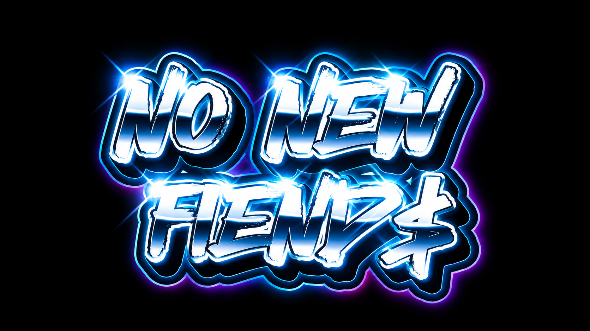
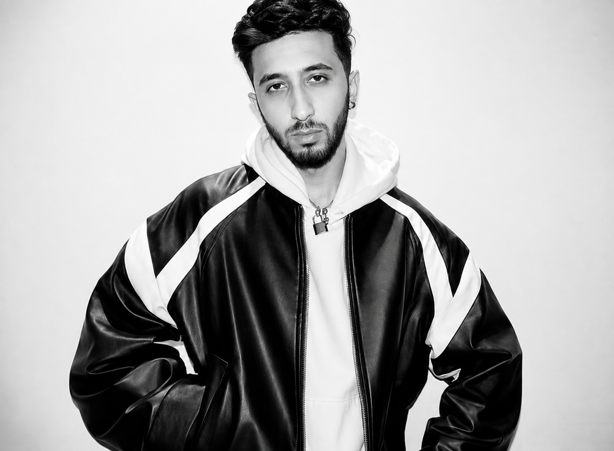
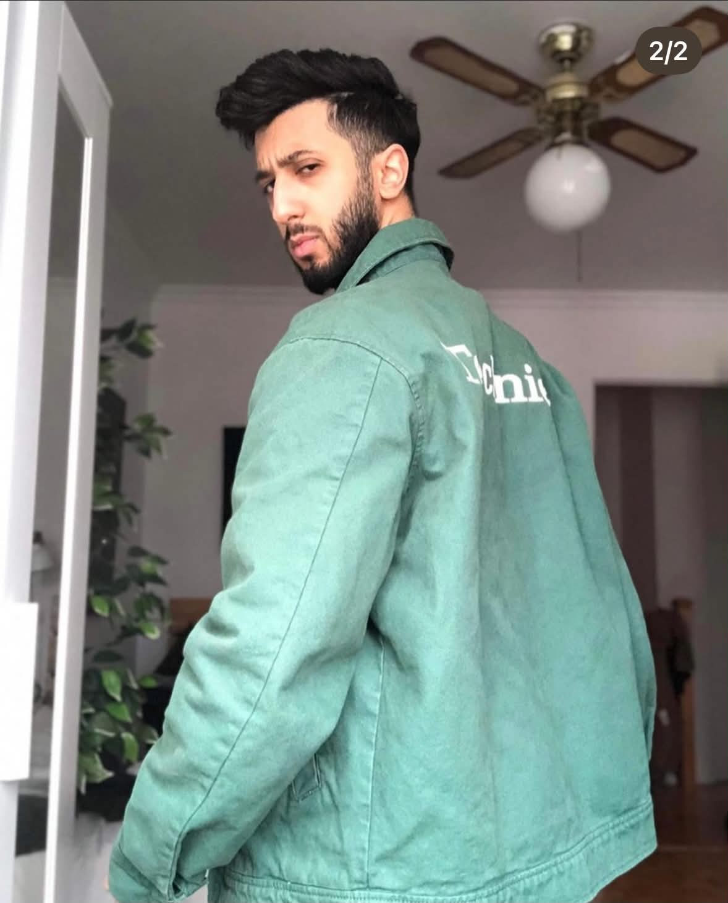
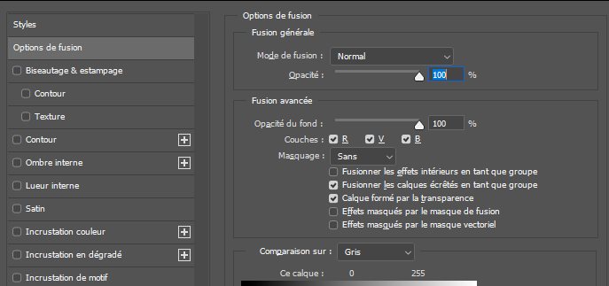
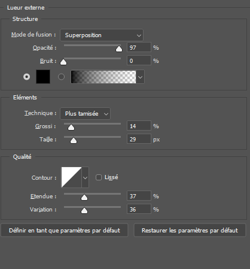

POWER
Composition numérique avancée - Photoshop, effets volumétriques et atmosphère post-apocalyptique. Utilisation de la colorisation, du découpage et des options de fusion.
Intégration multimédia — Portfolio 2026
Création immersion

Travaux sélectionnés

Composition numérique avancée - Photoshop, effets volumétriques et atmosphère post-apocalyptique. Utilisation de la colorisation, du découpage et des options de fusion.

Filmé par moi-même — utilisation du tracking de caméra et de la stabilisation pour un rendu fluide et cinématique. Projet de video clip pour l’artsite M.B.H. Un rappeur de montréal. Projet Perosneelle.

Filmé par moi-même — utilisation du tracking de caméra et de la stabilisation pour un rendu fluide et cinématique. vidéo clip fait pour le rapeur mbh. un artiste de montréal. projet personnelle. voir le Processus de création .... .
Montage video/sonore pour l'artiste KRØNIX. Visualiser de la musique addiction.
Montage vidéo musical réalisé pour un artiste de musique électronique — synchronisation des visuels sur les drops, transitions rythmées et ambiance visuelle immersive propre à l'univers électro.projet personenelle. utilisation du cutting, du mixing sonore, de la colorisation etc.

Visualiser réalisé pour un artiste de musique électronique — synchronisation des visuels sur les drops, transitions rythmées et ambiance visuelle immersive propre à l'univers G-House. projet personelle.
Montage video/sonore pour deux artistes en collaboration sur TikTok.
+ qui suis-je?
Je suis Walid Cheour, étudiant en intégration multimédia avec une passion pour la création visuelle et sonore. Mon expertise couvre le montage vidéo, le design graphique et la production audio.
Je recherche un poste permanent à temps plein en création visuelle, identité de marque ou production audiovisuelle.
Disponibilité
Immédiate
Localisation
Québec, Canada
Type de poste
Temps plein
Programme
Intégration multimédia

+ TRAVAILLONS ENSEMBLE
Vous avez un projet, une offre ou une question ? Je suis disponible et prêt à collaborer.
Projet en détail
Design numérique
Une composition numérique construite autour d’un portrait, de contrastes lumineux et d’une atmosphère post-apocalyptique. J’ai travaillé la colorisation, les effets de lumière et l’intégration des éléments pour créer une image intense et cohérente.


